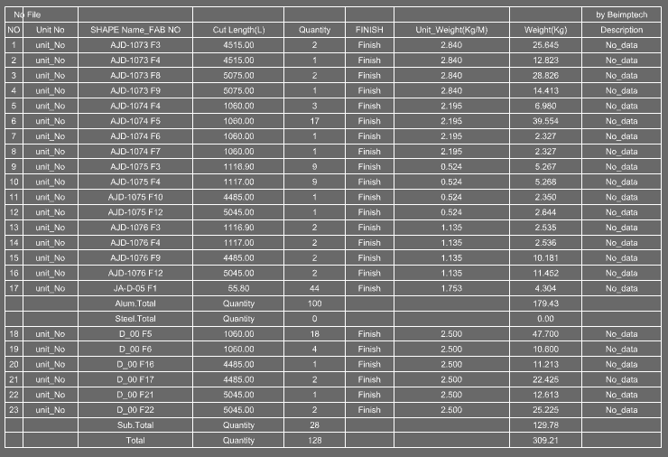

PMolist
PMolist reads ProfileData from selected Breps or Blocks and creates a Profile-centered quantity/weight list. Use this to quickly check the aggregate for Profile members themselves rather than Block quantities.
Used to quickly generate a simplified Profile-centered material quantity list, aggregating members by Profile name and Fab No. Provides a fast overview of profile material requirements without Block information, useful for quick material checks or when Block details are not needed.
FabNo.PMolist in the Rhino command line and press Enter.Excel_File_On to On.
| Option | Result when On |
|---|---|
Excel_File_On | Saves an Excel file appending the PMolist filename to the Rhino filename. |
| Item | Description |
|---|---|
| Unit No | Unit number recorded in ProfileData. |
| SHAPE Name_FAB NO | Profile name and Fab No displayed as one item. |
| Cut Length / Quantity | Cutting length and quantity aggregated by Profile/Fab No. |
| Weight | Weight incorporating length, quantity, and unit weight. |
| Command | Difference |
|---|---|
PMolist | Simple aggregate centered on Profile members. |
Molist | Creates a broader material list integrating both ProfileData and Block information. |